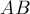
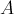
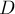
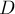
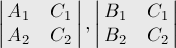
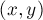

MAXimal
добавлено: 11 Jun 2008 10:12
редактировано: 20 Jun 2011 0:50
Содержание [скрыть]
Проверка двух отрезков на пересечение
Даны два отрезка  и  (они могут вырождаться в точки). Требуется проверить, пересекаются они или нет.
(они могут вырождаться в точки). Требуется проверить, пересекаются они или нет.
Если дополнительно требуется найти саму точку (точки) пересечения, то см. соответствующую статью.
Первый способ: ориентированная площадь треугольника
Воспользуемся Ориентированной площадью треугольника и предикат 'По часовой стрелке'. Действительно, чтобы отрезки и пересекались, необходимо и достаточно, чтобы точки  и  находились по разные стороны прямой , и, аналогично, точки
находились по разные стороны прямой , и, аналогично, точки  и  — по разные стороны прямой . Проверить это можно, вычисляя ориентированные площади соответствующих треугольников и сравнивая их знаки.
и  — по разные стороны прямой . Проверить это можно, вычисляя ориентированные площади соответствующих треугольников и сравнивая их знаки.
Единственное, на что следует обратить внимание — граничные случаи, когда какие-то точки попадают на саму прямую. При этом возникает единственный особый случай, когда вышеописанные проверки ничего не дадут — случай, когда оба отрезка лежат на одной прямой. Этот случай надо рассмотреть отдельно. Для этого достаточно проверить, что проекции этих двух отрезков на оси  и
и  пересекаются (часто эту проверку называют "проверкой на bounding box").
пересекаются (часто эту проверку называют "проверкой на bounding box").
В целом, этот способ — более простой, чем тот, что будет приведён ниже (производящий пересечение двух прямых), и имеет меньше особых случаев, однако главный его недостаток — в том, что он не находит саму точку пересечения.
Реализация:
struct pt { int x, y; }; inline int area (pt a, pt b, pt c) { return (b.x - a.x) * (c.y - a.y) - (b.y - a.y) * (c.x - a.x); } inline bool intersect_1 (int a, int b, int c, int d) { if (a > b) swap (a, b); if (c > d) swap (c, d); return max(a,c) <= min(b,d); } bool intersect (pt a, pt b, pt c, pt d) { return intersect_1 (a.x, b.x, c.x, d.x) && intersect_1 (a.y, b.y, c.y, d.y) && area(a,b,c) * area(a,b,d) <= 0 && area(c,d,a) * area(c,d,b) <= 0; }
В целях оптимизации проверка на bounding box вынесена в начало, до вычисления площадей — поскольку это более "лёгкая" проверка.
Само собой, этот код применим и для случая вещественных координат, просто все сравнения с нулём следует производить по эпсилону (и избегать перемножения двух вещественнозначных значений , перемножая вместо этого их знаки).
Второй способ: пересечение двух прямых
Вместо пересечения отрезков выполним пересечение двух прямых, в результате, если прямые не параллельны, получим какую-то точку, которую надо проверить на принадлежность обоим отрезкам; для этого достаточно проверить, что эта точка принадлежит обоим отрезкам в проекции на ось и на ось .
Если же прямые оказались параллельными, то, если они не совпадают, то отрезки точно не пересекаются. Если же прямые совпали, то отрезки лежат на одной прямой, и для проверки их пересечения достаточно проверить, что пересекаются их проекции на ось и .
Остаётся ещё особый случай, когда один или оба отрезка вырождаются в точки: в таком случае говорить о прямых некорректно, и этот метод будет неприменим (этот случай надо будет разбирать отдельно).
Реализация (без учёта случая вырожденных отрезков):
struct pt { int x, y; }; const double EPS = 1E-9; inline int det (int a, int b, int c, int d) { return a * d - b * c; } inline bool between (int a, int b, double c) { return min(a,b) <= c + EPS && c <= max(a,b) + EPS; } inline bool intersect_1 (int a, int b, int c, int d) { if (a > b) swap (a, b); if (c > d) swap (c, d); return max(a,c) <= min(b,d); } bool intersect (pt a, pt b, pt c, pt d) { int A1 = a.y-b.y, B1 = b.x-a.x, C1 = -A1*a.x - B1*a.y; int A2 = c.y-d.y, B2 = d.x-c.x, C2 = -A2*c.x - B2*c.y; int zn = det (A1, B1, A2, B2); if (zn != 0) { double x = - det (C1, B1, C2, B2) * 1. / zn; double y = - det (A1, C1, A2, C2) * 1. / zn; return between (a.x, b.x, x) && between (a.y, b.y, y) && between (c.x, d.x, x) && between (c.y, d.y, y); } else return det (A1, C1, A2, C2) == 0 && det (B1, C1, B2, C2) == 0 && intersect_1 (a.x, b.x, c.x, d.x) && intersect_1 (a.y, b.y, c.y, d.y); }
Здесь сначала вычисляется коэффициент — знаменатель в формуле Крамера. Если , то коэффициенты и прямых пропорциональны, и прямые параллельны или совпадают. В этом случае надо проверить, совпадают они или нет, для чего надо проверить, что коэффициенты прямых пропорциональны с тем же коэффициентом, для чего достаточно вычислить два следующих определителя, если они оба равны нулю, то прямые совпадают:

Если же , то прямые пересекаются, и по формуле Крамера находим точку пересечения  и проверяем её принадлежность обоим отрезкам.
Следует отметить, что если исходные координаты точек уже были вещественнозначными, то следует нормировать прямые (т.е. привести их к такому состоянию, что сумма квадратов коэффициентов  и
и  равна единице), иначе погрешности при сравнении прямых на параллельность и на совпадение могут оказаться слишком большими.
равна единице), иначе погрешности при сравнении прямых на параллельность и на совпадение могут оказаться слишком большими.